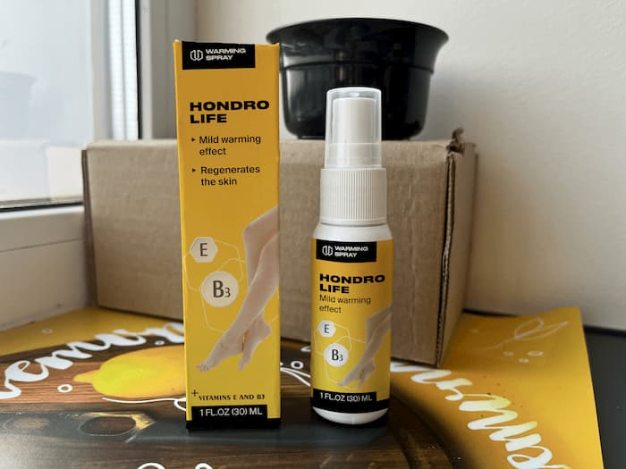
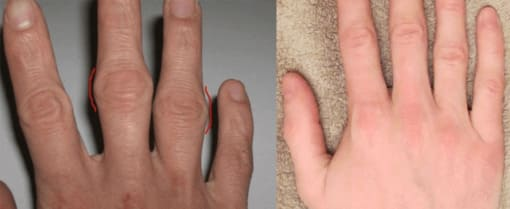
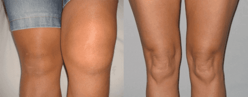
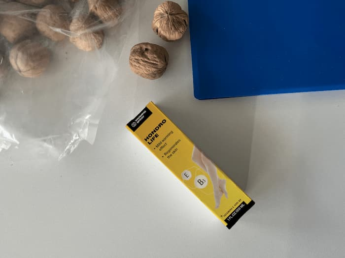
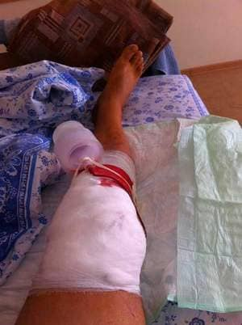

Autor: Czesław Król
Wylecz swoje stawy, jeśli nie chcesz skończyć na wózku inwalidzkim! Pamiętajcie: zapalenie stawów i choroba zwyrodnieniowa stawów niszczą chrząstkę stawową w ciągu 3 lat
Uwaga! Jeśli masz bóle stawów, w tym blogu znajdziesz moje
zalecenia na kompleksową regenerację i odmładzanie stawów. Nie słuchaj oszustów
lekarzy! W 2021 roku Polacy wydali 1400
miliardów złotych na produkty przeznaczone do leczenia stawów. Co roku apteki
wyciągają z kieszeni każdego obywatela Polski średnio 4670 złotych.
Leków jest coraz
więcej, ale z jakiegoś powodu jest coraz mniej zdrowych ludzi. Choroby stawów i kręgosłupa
były przyczyną niepełnosprawności nr. 1.
To z pewnością cię zaskoczy. Według statystyk po 25 latach każdy z nas rozpoczyna nieodwracalne procesy niszczenia stawów, a wszystkie choroby stawów są w większości spowodowane zaburzeniami układu limfatycznego organizmu.
Wykazano, że zakażona limfa wyzwala wiele bardzo złych procesów.
Zanieczyszczona limfa powoduje:
- Zapalenie stawów (artretyzm, dna moczanowa);
- Zwiększone zużycie chrząstki (choroba zwyrodnieniowa stawów, przepukliny, występy);
- Magazynowanie soli (osteochondroza);
- Wysuszenie smaru stawowego;
- Przerzedzenie kości (osteoporoza).
Czy wiecie, że ból stawów wywołuje AIDS? Tak, prawdziwy „artretyczny AIDS”. Artretyczne AIDS to nabyty niedobór odporności spowodowany zaawansowanym zapaleniem stawów.
Przewlekły stan zapalny i ból stawów osłabiają układ odpornościowy. Zapalenie stawów może w ogóle nie wystąpić lub może występować łagodnie: łagodne chrupanie stawów lub kręgosłupa, łagodny obrzęk lub uczucie sztywności.
Oznaki procesów zapalnych w stawach:
- Chrupanie;
- Ból;
- Obrzęk kończyn;
- Sztywność;
- Ostry bolesny „strzał”;
- Garb wdowi.
Proces zapalny w stawach to bardzo podstępna sprawa. Rozprzestrzenia się po całym ciele poprzez układ limfatyczny. Przechodzi z jednego stawu do drugiego. Potem nadchodzi czas na narządy wewnętrzne, mózg i szpik kostny.
Układ odpornościowy zwalcza stany zapalne, podczas gdy inne części ciała pozostają bez ochrony. Organizm staje się bardziej podatny na ataki bakterii i wirusów. W takim organizmie przeziębienie może szybko przekształcić się w zapalenie płuc, a zapalenie płuc w sepsę i niewydolność wielonarządową. To prawie pewna śmierć. A to jest nabyty artretyczny AIDS.
Nie lekceważcie zapalenia stawów, to bardzo poważna choroba. Ból stawów jest jednym z najmniej szkodliwych objawów zapalenia stawów. Substancje zapalne stawów w układzie limfatycznym rosną bardzo szybko i pojawiają się we wszystkich narządach.
Ponadto gruźlica kości występuje dość często, zwłaszcza u pacjentów z dną moczanową. Gruźlica kości jest również jedną z następstw zatrucia limfy produkty destrukcji stawów.
Czy wiecie, dlaczego was zastraszam?
Wszyscy wiemy, że jeśli zachorujecie, musicie iść do lekarza, on dużo wie o chorobie, wyleczy, to jego praca. A teraz poważnie, co robią dziś lekarze? Najpierw zamieniają osobę w przewlekłego pacjenta, który następnie umiera. To dziś największy „sukces” naszej polskiej medycyny.
Byłem też, jak mówią, na krawędzi. Prawie stałem się niepełnosprawny i straciłem mobilność nóg. Udało mi się jednak wyzdrowieć bez pomocy lekarzy . Współcześni lekarze pewnie by się zdziwili, ale czuję się świetnie, mimo że mam 90 lat!
W praktyce wielokrotnie byłem przekonany, że skoro jesteśmy dziećmi natury, należy w niej szukać środków leczniczych: stosować w leczeniu i profilaktyce chorób stawów zioła, kwiaty, korzenie. Oczywiście, z wyjątkiem nagłych przypadków, w których wymagana jest pilna opieka medyczna, takich jak zawały serca, udary, złamania.
Jeśli pacjent przyjmuje tabletki, a pominięcie powoduje nowe napady bólu, obrzęk, to oczywiście coś jest nie tak . Tylko ja znam prawdziwe liczby. W ciągu 12 lat te przepisy okaleczyły ponad milion osób! Ludzie, z których większość jest na emeryturze, prosili o pomoc swoich lekarzy. Jednak zamiast leczenia, lekarze korzystali z cierpienia ludzi, ponieważ z góry wiedzieli, że przepisane środki nie pomogą. A taka praktyka jest powszechna nie tylko w prywatnych, ale głównie w szpitalach państwowych.
95% LEKÓW SPRZEDAWANYCH W APTEKACH JEST CAŁKIEM BEZUŻYTECZNE LUB SZKODZI ZDROWIU.
Opowiem wam o moim doświadczeniu.
W wieku 55 lat na własnej skórze
przekonałem się, czym jest choroba zwyrodnieniowa stawów – całkowicie straciłem
ruchomość stawu kolanowego i przez długi czas poruszałem się o kulach z nieznośnym
bólem .
Spróbowałem łącznie 47 metod leczenia stawów, zajęło to 9 lat i 7 miesięcy. Próbowałem nawet kuracji pijawkami i dwumiesięcznej kuracji "superpreparatami" zamawianymi z zagranicy, wszystko poszło na marne dopóki nie zwróciłem się do początków, do apoterapii!
Szczerze mówiąc, nie wymyśliłem roweru. To proste: masaż i spray na bazie cennych roślin zebranych w czystym, ustronnym miejscu . Wszystko jest bardzo proste, ale po miesiącu kuracji poszedłem do sklepu i prawie nie potrzebowałem kul. A sekret jest prosty: wykonując wszystkie te manipulacje, przywróciłem krążenie krwi i przepływ płynu maziowego do stawu kolanowego, którego tak bardzo brakowało w moim kolanie.
Jak widać na moich zdjęciach rentgenowskich, chrząstka jest całkowicie zregenerowana. Pełne wyzdrowienie zajęło mi 2 miesiące.

Nie powiem bzdur i powiem, że sam to opracowałem. Receptura została opracowana przez naszych przodków, eksperymentując z darami natury. Byłem zaangażowany tylko w produkcję i badania produktu o nazwie „”, aby mieć pewność co do jakości produktu!
Przez dziesięciolecia pracowałem w medycynie i opiece zdrowotnej. Zawsze miałem nadzieję, że rozsądni ludzie skorzystają z moich badań medycznych. Moje oczekiwania zostały spełnione Po wszystkich testach produkt został zatwierdzony i dopuszczony do obrotu .
Produkt, o którym mówię, został opracowany w Polsce specjalnie w celu wspierania zdrowia astronautów, personelu wojskowego i sportowców wyczynowych! Ten spray powinien być sprzedawany we wszystkich aptekach w kraju. Badania nad tym lekiem w Polskim Instytucie Reumatologii wykazały doskonałe wyniki: 7849 pacjentów całkowicie wyzdrowiało, co stanowi ponad 93% wszystkich uczestników, 6,5% doświadczyło znacznej poprawy, tylko 0,5% nie wykazało żadnej poprawy. Jednak ze względu na problemy w kraju projekt został przełożony.
Czas mijał i wreszcie nadszedł długo oczekiwany dzień, kiedy ten produkt pojawił się w Polsce!
Skład nowoczesnego sprayu „” jest bardzo silny. Zawiera składniki, które pomagają MAKSYMALNIE wniknąć w uszkodzoną tkankę chrzęstną!
Oto krótka lista tego, co może zrobić ten spray:
1. Działa stale, nie tylko podczas aplikacji;
2. Eliminuje stany zapalne dzięki witaminom E, B3;
3. Chroni staw przed zniszczeniem - olejki eteryczne z mięty, cynamonu, eukaliptusa wzmacniają chrząstkę;
4. 100% naturalny skład!
Chciałbym zwrócić waszą uwagę na fakt, że spray regeneruje stawy nawet u pacjentów w bardzo podeszłym wieku, dlatego polecany jest dla emerytów. Może być również stosowany w celu zapobiegania problemom ze stawami i kontuzjom.
Mam nadzieję, że w Polsce znajdą się ludzie, którzy chcą, aby ich dzieci i wnuki były zdrowe, żyły w zdrowym kraju i nie umierały na choroby w zatrutym środowisku. Wierzę, że pewnego dnia mój system wspólnego leczenia zostanie wprowadzony także w państwowych szpitalach! jest teraz w promocji!
Wypełnij formularz zamówienia bezpośrednio od oficjalnego producenta sprayu w Polsce. Obyście wszyscy byli zdrowi, dbajcie o siebie i swoje stawy!









